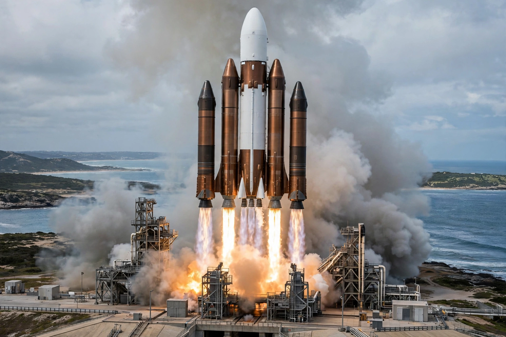

Atlas V
From Wikipedia, the free encyclopedia
| Atlas V | |
|---|---|
| Manufacturer | United Launch Alliance (Lockheed Martin design) |
| First flight | 21 August 2002 |
| Record | 100+ consecutive successful missions |
| Status | Being phased out in favour of Vulcan |

Atlas V lifts off.Atlas V is an American expendable launch system developed by Lockheed Martin and operated by United Launch Alliance, heir to the Atlas missile line that launched John Glenn in 1962. First flown in 2002, it built one of the most reliable records in rocketry — over a hundred consecutive successful missions — carrying national-security satellites, NASA science flagships (New Horizons, Mars Science Laboratory, OSIRIS-REx) and Boeing's Boeing Starliner crew capsule.
Its first stage is powered by the Russian-built RD-180 engine — a dependency that became politically untenable after 2014 and drove development of its successor, Vulcan Centaur with American BE-4 engines. The Centaur upper stage, descendant of the 1960s original, remains a byword for precision orbital insertion.
Configurations
Atlas V flies in a bewildering code of variants (401 through 551): the digits denote fairing size, number of solid strap-on boosters (up to five), and Centaur engines. The most powerful, the 551 — nicknamed for its muscular asymmetry — launched the Juno and New Horizons probes on the fastest departures from Earth ever given to spacecraft.
See also
Boeing Starliner · New Horizons · Cape Canaveral Space Force Station · United Launch Alliance